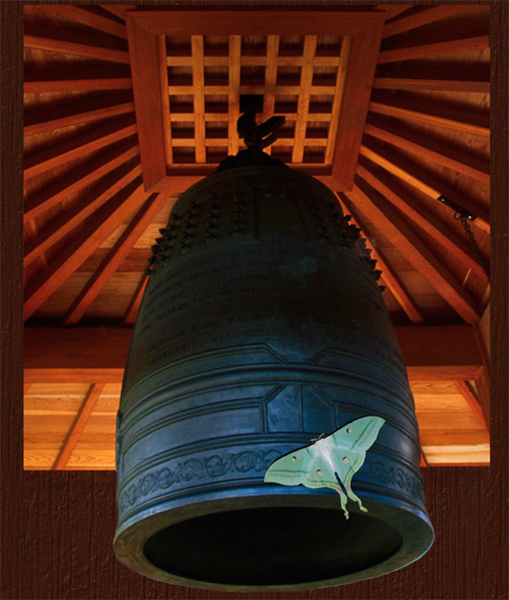

Ray Rasmussen
Edmonton, Alberta, Canada
Twice in the Kurimoto Garden
A long lineup at the gate. I had hoped for a quiet day with my camera, an escape from the noise of traffic, the frenetic pace of city life. But there are three groups of people lingering on my favorite bridge, the one I came to photograph with its foreground of yellow day lilies, and its gently curved wooden span weathered to wabi-sabi perfection. So I fold up my tripod, move to a more remote part of the garden – to the bell gazebo. It's there I hope to escape from the hot sun and crowded, noisy pathways, and especially from my complaining mind.
Standing next to the gazebo's bronze bell, cast in Japan, I open the small volume of Japanese haiku I’ve brought with me and read Buson's haiku:
on a one-ton temple bell –
a moon-moth
folded into sleep
~ Buson
Eyes closed, I use it as a mantra, repeating it over and over again – a meditation on Buson's mindset.
Stepping close to the bell, I reach out, my hand becomes the moth, my fingers its legs and antennae, exploring the etched surface. I give the bell a gentle push and feel its resistance. And I’m the bell, a massive weight of family issues, political chaos and war, the plight of the world’s poor, the poor in my own city.
Settling on the nearby wooden bench, eyes closed, I continue the mantra, and the moth now settles on the bell of my mind.
Then . . .
Footsteps, a child's voice, "Mom, can I?"
"No. Don't touch, dear."
"Just once, mom, please."
The bell’s chain clanks as its massive wooden clapper is pulled back and released.
An endless "goooooong" fills me with vibration and sound, and slowly diminishes until at last I receive its blessing of a quieter mind.
moon moth –
floating peacefully
through the garden
Notes:
If you've not done so, past poet laureate of the US, Billy Collins, wrote a poem, "Japan," about his take on Buson's poem. You can read it here: Billy Collins, Japan. I don't believe that I had read Collins' approach to Buson's haiku prior to writing my ekphrastic rendition. His free verse prose style, however, serves as an inspiration to those of us wishing to write more literary haibun or more poetic prose.
Here's a recording of my reading of Collins' "Japan."
Here's a recording of my reading of my piece, "Twice in the Kurimoto Garden."
Here's a recording of a Japanese Bell sound from the Ohara Peace Bell. (may I suggest full volume)
The haiku in the text is my rendition of a translation of Buson's haiku translated by X.J. Kennedy.
This is a revision of a haibun previously published in Haibun Today, Thursday, January 29, 2009.
The image is from my photograph of the Kurimoto Garden's bell gazebo and an image of a moon moth. |